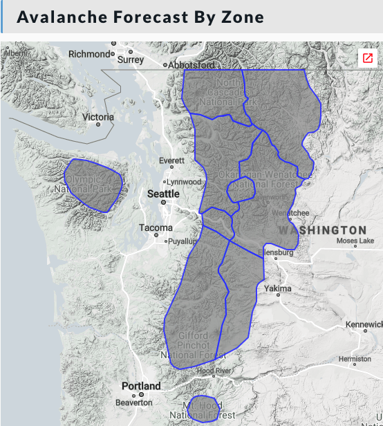
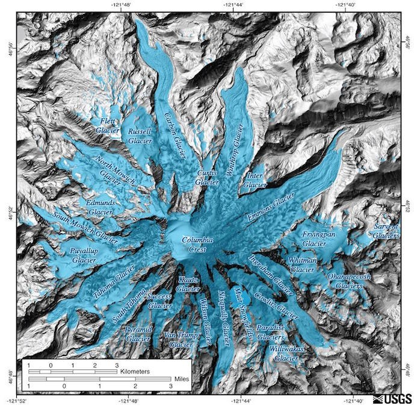
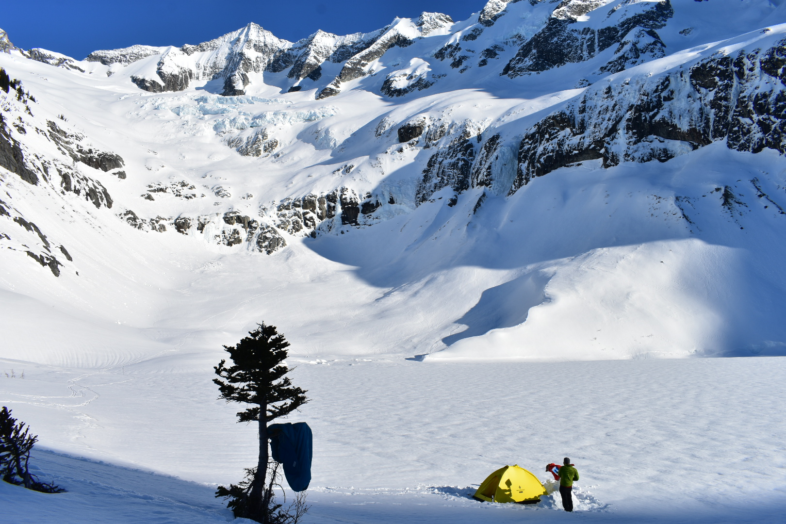
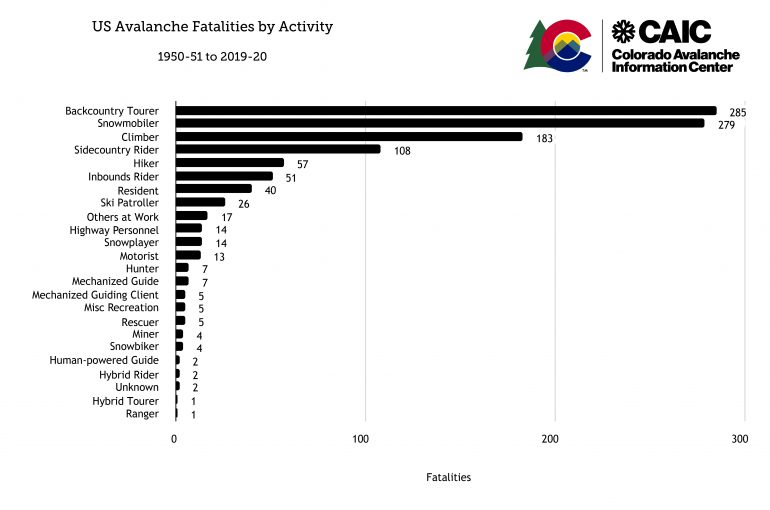
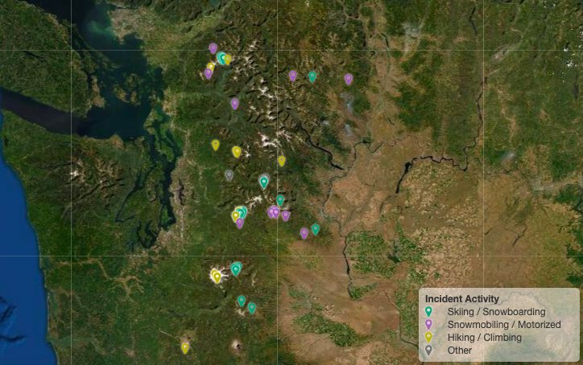
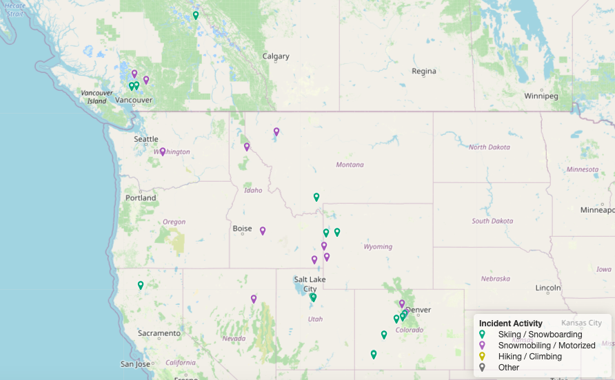
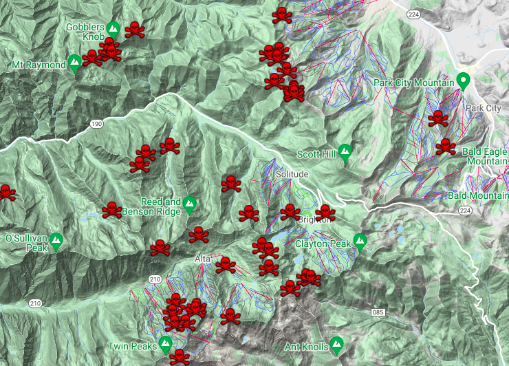
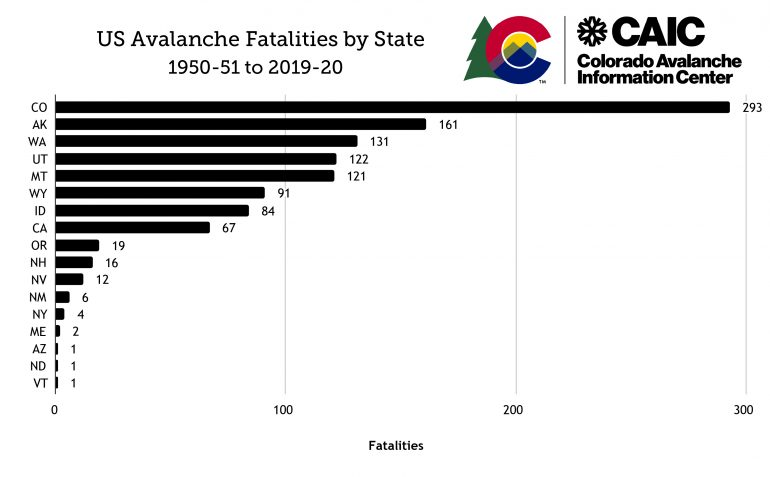
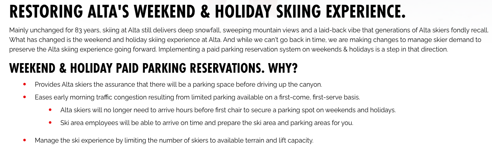

Backcountry Recreation

Hundreds of people climbing Mount St Helens on March 13, 2021. Photo from Ralph Daub
Introduction
Backcountry recreation on snow requires adequate snow depth within mountainous areas, and is an increasingly popular activity as well as a highly lucrative component of the winter sports industry. A greatly reduced snowpack will have significant ramifications for backcountry recreation, an activity which will be considered for its economic and societal significance in Washington state. The maritime snowpack of the Washington Cascades is especially susceptible to climate change due to mild temperatures hovering at or near the freezing level, and lower elevation recreation locations are at the greatest risk in the short term. The extent of glaciers in the Cascades Range has already decreased substantially, decreasing 56% in the North Cascades from 1900 to 2009 (Snover et al 2020), and many will disappear completely as ablation from warm temperatures continuously outweighs accumulation from snowfall. Glaciated areas contribute to the uniquely long winter recreation season in the Cascades which stretches into the summer months, and as they melt this will no longer be possible. Additionally, many of the most commonly accessed backcountry recreation areas in the site are located at relatively low elevations, and are at a considerable risk of winter snowfall becoming rain. The ski areas of Washington all have base areas between 3000 and 5000 feet, and as the snowline incrementally increases these areas as well as the subsequent nearby backcountry areas are in jeopardy of too little snowpack to be viable.
The rapid changes in snowpack are juxtaposed with increasingly popular backcountry recreation. More people than ever are backcountry skiing, snowboarding, snowmobiling, snowshoeing, or other forms of recreation on snow. Unprecendented volumes of individuals have taken to the mountains, overcrowding Sno-Parks and other access points. Ski touring specifically has seen an unprecedented increase in popularity in 2020, in part due to uncertainty and restrictions at ski resorts due to the COVID-19 pandemic and a growing outdoor movement. In tandem with the greatly increased usage is an troubling increase of individuals who are uneducated and unprepared for the inherent hazards of snowy mountains. Avalanche education is an essential component of Winter travel, especially in the characteristically steep Cascades mountains. Washington has only suffered a single avalanche fatality in 2021, its first in several years. However outside of Washington this year has been the most tragic on record stretching back to 1910, in part due to the greatest volume of outdoor recreationalist. The industry will undoubtedly undergo significant changes as a result of increased usage and a diminishing snowpack, and the future of winter backcountry recreation in the Washington Cascades is addressed in this site.
Dimished Snowpack and Backcountry Recreation
Protect Our Winters: How Climate Change will Impact the Snowsports Industry
Analysis of the Terrain of the Cascades and Recreation
Discussion of recreation areas in Washington. Winter access points at Mount Baker, Stevens Pass, Snoqualmie Pass, Crystal Mountain. Paradise.
NWAC zones:

Washington Glaciers
One of the most incredible aspects of backcountry recreation in Washington is the presense of glaciers. ...

Mount Rainier National Park contains the highest concentration of glaciated area in the contiguous United States covering about 90 square km (35 square miles). Backcountry recreation on snow and ice within the National Park occurs year round, with over 10,000 people attempting to climb to its summit every year. Mount Rainier has undergone signifigant losses in glacial cover and volume as a result of increased temperatures during the last century. Great resources going into further detail on changes to glaciation in MRNP can be found on the NPS website. Mount Rainier is undoubtably an iconic figure in Northwest backcountry recreation, and will be the last peak in the area to hold snow and ice.

Skiing and camping on the Forbidden Glacier, North Cascades National Park
Dynamics of Social Media
The emergence of social media has played a major role in recent changes to backcountry recreation. The abundance of information allows for people to better understand how others are recreated, which comes with a variety of positive and negative effects. Some examples of what is provided by social media is: real time conditions updates, inspiration for trips outdoors, warnings of high danger, learning experience from others mistakes, public shaming for inappropriate behavior, overcrowding of popular spots, and many more. It is apparent that social media has altered backcountry recreation by connecting people. The creation of focused outdoors groups, primarily on Facebook but also on other platforms, connects individuals of similar interests. The ability to meet a stranger online and plan a trip with them provides access for many people that would not otherwise have it. Sharing of rides, expensive outdoor gear, or just the motivation of someone to go with pushes people into the outdoors. Possibly even more influencial than the connections is the idea of shared knowledge. The ability to share information with hundreds or thousands of like-minded people changes the way that the outdoors is approached. After someone discovers an little known location and shares it in a group, all members of the group who read it now also know about it. If even a few of them decide to follow, the spot is now known. Social media has fundementally changed society, including outdoor recreation.
The largest outdoor recreation Facebook group in the area, Washington Hikers and Climbers.
From a safety perspective, there are notable benefits to shared information. For example, during periods of high avalanche danger in Washington, there are often numerous posts warning people to be conservative in the trips they take. When accidents occur, the story is often shared online. This gives people the opprotunity to learn from the mistakes of others without having actually been in the dangerous situation. Information can be "crowd sourced", with everyone contributing what they personally saw to the larger knowledge base. This idea has been utilized to crowd source snow depth in the backcountry, described in this article. The idea is that people in the backcountry in the Winter will record and submit the depth of snow in the area they are at, to give everyone a better idea of what the snow is like. This is an unusual situation however, as most aggregation of information is informal and disorganized, highly dependent on the groups and sources an individual is a part of. Some avalanche organizations have utilized social media to get their messsage out, described in this article. The short attention spans associated with social media forces individuals and organizations to grab your attention with their posts. What gains traction on online platforms is often the most exciting or notable. While posts may spread attention to inherent risks and keep people safer, they may also idolize high risk activities because it creates the best content. There is a motivation to go viral or share something notable on your feed, which can contribute to risk in the backcountry.
Notable social media groups related to Washington backcountry recreation are the Facebook groups: Washington Hikers and Climbers, PNW Peakbaggers, Turns All Year, Pacific Northwest Mountaineers, and PNW Snowmobilers.
COVID-19 Pandemic
The COVID-19 Pandemic had a major impact on outdoor recreation that it has pushed people outside. With many events and activities in the city shut down people have taken to the outdoors for entertainment. A greater appreciation and experiencing of the outdoors by the general population is certainly not a bad thing, but in some cases area have been unable to keep up with the increased usage. In Washington, all three National Parks (Mount Rainier, Olympic, North Cascades) have adopted a new backcountry camping permit system in 2021 to cap the increased usage in several areas. The boom in pandemic ski recreation is discussed in a Seattle Times article, which describes how avalanche classes in late 2020 were completely sold out, and backcountry safety gear impossible to find. Overuse of Winter access points forced the opening of three new Sno-Parks, as the existing infrastructure could not handle the amount of people. Many of the ski resorts of Washington state switched to a reservation system during 2020-2021, a decision attributed to overcrowding and the spread of the COVID-19 pandemic. This disrupted the local ski industry as resorts were often at full capacity, and was likely a contributing factor into pushing more people into the backcountry.
The impacts of COVID-19 were asked as a question to the NWAC Deputy Director Dallas Glass:
In what ways, if any, have you seen the COVID-19 pandemic impact backcountry recreation in the Northwest? Have recent increases in popularity in backcountry resulted in additional challenges for avalanche forecasting?
"I don’t think it’s any big surprise that at least anecdotally we’re seeing more people enjoying the winter mountains. Last summers boom in outdoor recreation was a great indicator of what we could (and did) experience this winter season. Honestly, I think this is a good thing. The fact that more people are experiencing and enjoying wild places and public lands is a huge positive. I’m happy to see folks our for their first winter hike, snowshoe outing, ski tour, or snowmobile ride. For sure, this increase in use comes with many challenges. But, let’s not focus on the difficulties without first and foremost acknowledging the benefit of the outdoors on peoples lives. Sure we need education and conservation. This responsibility now becomes very interdisciplinary. It's not just the USFS’s job or the ranger’s responsibly. It's all of us. First, it’s our job to recreate responsibly ourselves. To know, understand, and follow leave no trace ethics. Similarly, retailers, manufactures, social groups, influencers, and friends all have a role to play in encouraging all users (new and experienced) minimize their impact."
Overcrowding
For many people, the appeal of the outdoors, especially in the Winter, is in the peace and quiet that you will find. Escaping the busy cities to wander among the empty snowy mountains is relaxing and rejuvinating. Unfortunatately, this is countary to overcrowding which has become increasingly problematic in certain outdoor spaces. ...
A line of climbers climbing the Pearly Gates on Mount Hood, from Pacific Northwest Mountaineers Facebook Group
Search and Rescue
Avalanches
Avalanche Fatality Mapping
https://github.com/tkakatsakis/Avalanche-MappingWashington Every Fatality by Avalanche: Link
North America Every Fatality by Avalanche 2021: Link

Existing Fatality Maps:
Utah Every Fatality from Avalanche: Link
Does Washington have Fewer Avalanche Fatalities?
The 2021 Winter was the deadliest in recent history with over 40 avalanche fatalities in the continent. Despite this, Washington state only had one fatality, and it was the first in the last several years. In the short term, this area has seen a huge decrease in fatalities even though long term it remains one of the highest, how can this be explained? This question was posed to the deputy director of NWAC, Dallas Glass:
Relative to other avalanche forecasting regions in North America, the region covered by NWAC has had very few avalanche fatalities in recent years. What do you attribute this success to? How can the community continue to avoid fatal accidents in the backcountry?
"I guess first, I’d say don’t read too much into the short term lack of fatalities. WA still ranks 3rd nationally (1950-2020) for avalanche deaths. While, we’ve recently experienced fewer accidents, it's too early to call this a trend. Second, I’m often reminded that the difference between 0 fatalities and 6 fatalities is razor thin. Our region experienced numerous avalanche involvements and near misses this season. I can think of several instances in which travelers were caught, carried, and buried but recovered by their companions. Third, statistics don’t matter if you’re the “1”. The families, friends, and communities who suffered from the recent avalanche fatalities we did experience likely won’t find much solace in the lack of other deaths. I say all this not to be negative, but to remain vigilant and proactive. At NWAC we strive to produce accurate, consistent, and approachable forecast every single day. Our dedication to increasing our forecasting capabilities remains unchanged. We rely heavily on you, the users to prepare, plan, travel safely, and debrief to reduce avalanche fatalities in our region. For myself, this looks very much like the process I first learned in my AIARE Level 1. Anyone who’s traveled with me knows, I’m insistent on completing a thorough trip plan. This means a systematic process where I walk through and write down (in my blue book) information regarding the days conditions, forecasts, mindset, and plan. I think it's easy to believe that book and process are only for a L1 course. And, I’d imagine few people re-engage with that process after the class. However, I believe it's an integral part of me being a responsible member of my team and the larger backcountry community. Again, that L1 process (and book) are the backbone of what I do every single day before I head to the snow. While, a process and trip planning won’t fully eliminate fatalities, I do believe it sets all of us up for the best chance of success with intentional hazard recognition, observations, and terrain avoidance."

Case Study and Personal Accounts
1. Alpental Valley, Snoqualmie Pass
One of the most troubling and popular sites for backcountry recreation in Washington state lies just a few miles away from Interstate I90, just off of Snoqualmie Pass. The Alpental valley, containing the South fork of the Snoqualmie River, is traveled by thousands of individuals every Winter. The popularity of the area makes sense; it is one hour away from the Seattle area, it is accessed from the Alpental Ski Area which currently recieves an average of over 400 inches of snowfall each season, and the area contains extremely steep and beautiful terrain.
Tragically, the Alpental valley has been the location of seven fatalities due to avalanche, and undoutably many more close calls. Additionally, as a result of overcrowding several measures have been taken. A designated uphill route have been created up the valley both for safety and logistics. Warning and information signage has been put up in several locations, and parking has been restricted in the closest parking lot to resort skiers. The popular route to Source lake, and optionally up to snow lake, is likely the most commonly traveled winter route in the state.

Alpental Valley, Chair Peak, and Snow Lake. Image credit Northwest Avalanche Center
In February 2021 a widespread avalanche cycle occured in the Cascade range. It resulted from a notable weak layer in the snowpack from a crust in mid January, which was unable to heal due to cold temperatures and continuous snowfall. The existance of this danger was well documented among the outdoor community, but many individuals still chose to travel underneath avalanche terrain and one fatality was recorded. In the above picture, the terrain of the Alpental valley can be seen as well as massive collections of avalanche debree underneath nearly every steep slope. The textured snow surface visible, as well as a large pile on the edge of Snow Lake in the shade, contain the aftermath of the dangerous cycle of avalanches.
Avalanche crown on Chair Peak, estimated to be over 10 feet deep. Image credit Northwest Avalanche Center
One slide in particular was shockingly destructive, unpredicted, and lucky that no one was involved. This persistent slab avalanche triggered naturally on the East aspect of Chair peak during the night. It ran thousands of feet into the valley below, completely coverering the above mentioned highly popular backcountry route up the valley. Several groups were present in the area the day before the slide, unawawre of the possibility of this highly consequential event. Had it occured 12 hours earlier or later, surely there would have been fatalities. This specific slide is further discussed here.
Fresh avalanche debree near Source Lake. Two individuals can be seen climbing up next to the debree, in danger of an additional slide.
In a personal trip to the area in April I observed a similar and concerning scene. My group was aware that there had been a recent natural slide, and intended to stick to sheltered slopes during a brief morning trip. As we arrived at Source Lake we saw 5+ parties. Several of them mentioned that they were unaware of these conditions and turned around, while others continued directly up the avalanche debree. In the image one group can be seen right on the edge of the debree, risking the possibility of a second event. One individual was alone, without safety gear, undettered by the scene and in route to "Avalanche Mountain". It is possible that these individuals have recently taken up backcountry recreation and are unaware, and it is also possible that they are experienced and have a different risk tolerance or perspective on the situation as I did. However I found it to be very frightening to see so many people unaware of unbothered by the signifigant risks they were choosing to take. Fortunately, no additional slides were recorded this day and everyone made it out safe.

Skier triggered windslab on Snoqualmie Mountain, 4/9/21, Image credit Northwest Avalanche Center
The following week however, 5 notable human triggered avalanches occured in the Alpental valley. Two of them caught and carried skiers, with one full burial. There were no serious injuries. April snowfall blanketed the stable Spring slopes with unconsolidated powder snow, and complacency that the avalanche season was over likely contributed to this string of accidents. The Alpental valley is a hotspot for backcountry skiers, and April 2021 once again had several extremely close calls in this one specific area. The fact that there was not a more serious incident here in 2021 is in my opinion very lucky, and only a matter of time before a fatality occurs.
2. The Wasatch Range, Utah
Travelling outside the Cascades during 2021, I witnessed backcountry recreation in the Wasatch range near Salt Lake Ciy, Utah. This is one of the most popular locations for backcountry skiing in the nation.

The first ski tour I went on was up Mount Superior. It is one of the "classic" lines of the Wasatch and the crowds I encountered reflected that. As I arrived at the summit dozens of people were already there, getting ready to ski, snowboard, or even fly off of its rugged, narrow peak. It is not an inherently bad thing there were so many people there-- they were enjoying the beautiful mountains just as I was. Dangerous avalanche conditions for much of the season had prevented people from being up there, and many of the residents of Salt Lake City were taking advantage of the more stable Spring conditions. But during the next 20 minutes I observed four events that I found very troubling however:
- An indivual put their ski on incorrectly, and as they started to ski down fell forward, very nearly off a large cornice and down the mountain.
- Several parties began skiing at the same time, with people above and below them. The risk of avalanche was low but not impossible, and by failing to space out an avalanche would have been very consequential.
- A group of snowboarders descended descended the wrong way and found themselves above a cliff band. One individual was scooting on their butt above the dangerous exposure. They shouted to us for help getting down, and were not self-sufficient in this situation. They eventually made it out, but clearly did not know where they were.
Each of these events may have simply been bad luck or a fluke, but it was clear that many individuals were putting themselves in danger through the actions and route that they chose. I have certaintly made mistakes in the mountains before and do not mean to gatekeep a sport which has inherently high barriers to entry. However the scene in the Wasatch was crowded and concerning.
Alta Ski Area is considered to be the birthplace of avalanche mitigation in the United States, as described in the history of avalanche in Utah. The mining town, at the end of Little Cottonwood Canyon, was continually impacted by destructive avalanches. As people began to ski in the area the natural progression was the development of avalanche control and a greater understanding of snow science. Today, this area sees a high usage from backcountry skier and resort skiers alike.

At the end of the 2021 Winter season Alta announced that it would implementing a paid parking reservation system. This follows the actions of neighboring Snowbird ski, in an effort to ease congestion and ensure space for its paying guests. The key issue here -- parking in the town of Alta is also parking for the hugely popular backcountry terrain. A massive section of Little Cottonwood is public land, well suited for backcountry skiing and snowboarding. Access is already very difficult, and is now restricted by the ski resorts.
Backcountry recreation in the Wasatch consists of a considerably more compact space than the Cascades, and a different set of challeneges.
Relevant Media
https://www.cbc.ca/news/canada/british-columbia/backcountry-avalanche-caution-bc-1.5869336?fbclid=IwAR1nu4xLa-7JTABuNMjkZn51C2Gge9p6cMBtiEcZvISmZToFpmkcVMtJ7Hwhttps://theknow.denverpost.com/2021/02/19/colorado-backcountry-avalanches-february-2021/253439/
https://theknow.denverpost.com/2021/02/19/colorado-backcountry-avalanches-february-2021/253439/
https://snowbrains.com/court-case-of-men-who-triggered-avalanche-near-eisenhower-tunnel-co-in-march-2020-continues1/?fbclid=IwAR3ChBiPzKfyLx8UP0AJOI-Rf8E34b11AvnKsl0LOROIZhGsLAl9gHLBmQE
https://www.fox8live.com/2021/02/18/us-covered-snow-most-widespread-coverage-years/#:~:text=Snow%20covered%2073.2%25%20of%20the,fall%202003%2C%20according%20to%20NOAA
https://www.tetongravity.com/story/news/a-note-on-how-we-address-avalanche-fatalities?bwf_dp=t&bwf_entry_id=69392&bwf_token_id=23602&bwf_token=g9Pghe9gbR0EcTDJJeR9SeGge&fbclid=IwAR0UC7VAhs7eYfli6msGHl5rwhLDnZTlRJ_A_EzkY3h9n1bKg8ghLkszPrY